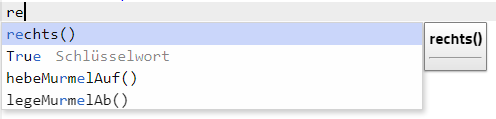
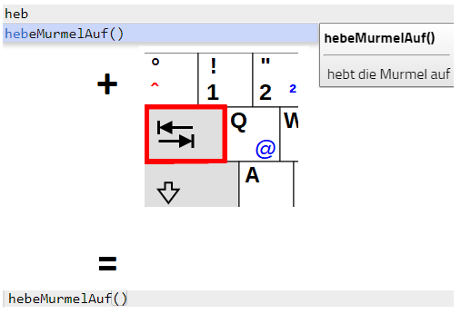
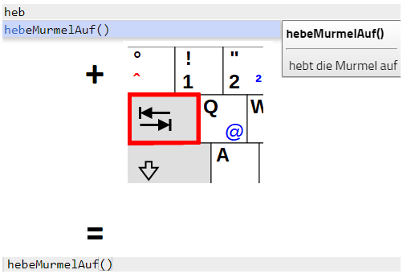

Befehlsfolgen-Murmeln
Programmiere den Roboter:
Der Roboter soll die Murmel im Loch ablegen.
Der Roboter soll die beiden Murmel in die beiden Löcher legen.
Hinweis: Der Roboter kann höchstens eine Murmel tragen.
Tipp: Wenn du zu faul zum tippen bist, kannst du ab dem ersten Buchstaben Tabulator drücken und der Befehl wird automatisch mit dem ersten Vorschlag im angezeigten Menu vervollständigt. Als Beispiel siehe auch "Weiter Hinweise"

Entweder kann du direkt auf den gewünschten Befehl klicken, oder mit den Pfeiltasten und der Tabulatortaste (rot) arbeiten. 
Entweder kann du direkt auf den gewünschten Befehl klicken, oder mit den Pfeiltasten und der Tabulatortaste (rot) arbeiten. 